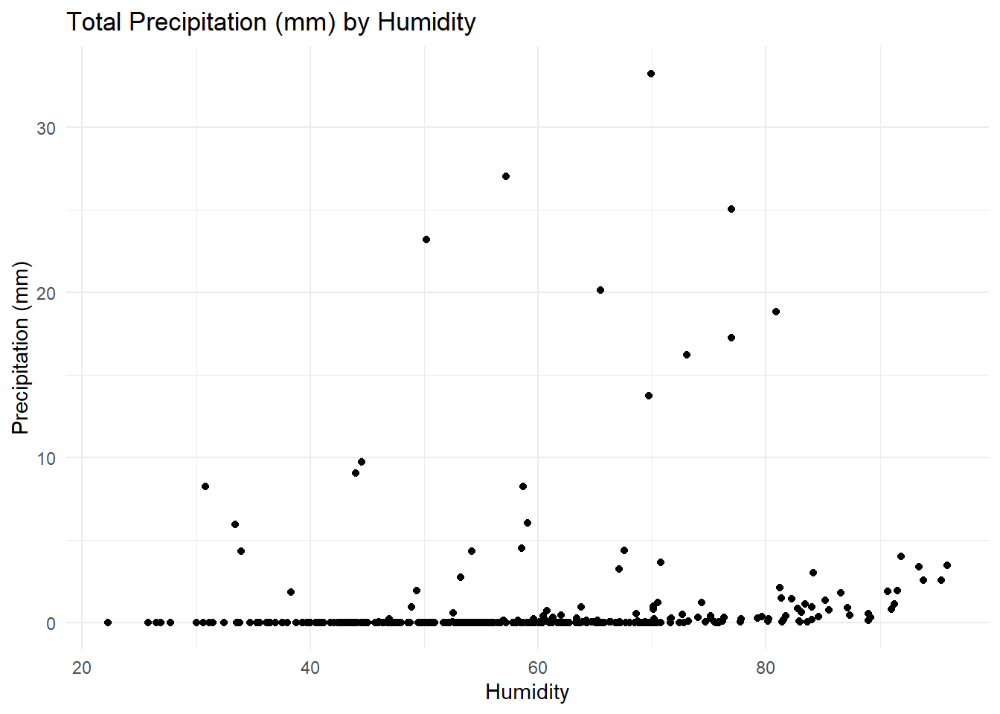

In this homework I will investigate factors that influence bike share usage. The data set is courtesy of the UC Irvine Machine Learning Repository, it tracks bike share utilization across specific days and hours with additional variables relating to weather. There are also variables telling us if a given day was a holiday or functioning (working) day.
library(tidyverse)
Warning: package 'tidyverse' was built under R version 4.4.3
Warning: package 'ggplot2' was built under R version 4.4.3
Warning: package 'tidyr' was built under R version 4.4.3
Warning: package 'readr' was built under R version 4.4.3
Warning: package 'dplyr' was built under R version 4.4.3
Warning: package 'stringr' was built under R version 4.4.3
Warning: package 'forcats' was built under R version 4.4.3
Warning: package 'lubridate' was built under R version 4.4.3
── Attaching core tidyverse packages ──────────────────────── tidyverse 2.0.0 ──
✔ dplyr 1.1.4 ✔ readr 2.1.5
✔ forcats 1.0.0 ✔ stringr 1.5.1
✔ ggplot2 4.0.0 ✔ tibble 3.2.1
✔ lubridate 1.9.4 ✔ tidyr 1.3.1
✔ purrr 1.0.2
── Conflicts ────────────────────────────────────────── tidyverse_conflicts() ──
✖ dplyr::filter() masks stats::filter()
✖ dplyr::lag() masks stats::lag()
ℹ Use the conflicted package (<http://conflicted.r-lib.org/>) to force all conflicts to become errors
library(dplyr)library(purrr)library(psych)
Warning: package 'psych' was built under R version 4.4.3
Attaching package: 'psych'
The following objects are masked from 'package:ggplot2':
%+%, alpha
#library(tidymodels)
This is a simple reading of a CSV file from a hyperlink but for a data encoding mismatch that must be handled via the locale = argument. The dataframe I will use before any subsetting or cleaning will be named ‘bike_full’.
Rows: 8760 Columns: 14
── Column specification ────────────────────────────────────────────────────────
Delimiter: ","
chr (4): Date, Seasons, Holiday, Functioning Day
dbl (10): Rented Bike Count, Hour, Temperature(°C), Humidity(%), Wind speed ...
ℹ Use `spec()` to retrieve the full column specification for this data.
ℹ Specify the column types or set `show_col_types = FALSE` to quiet this message.
Exploratory Analysis
To begin exploring the data and making myself familiar with it I will first check for missing values. Sum_na is a function we will write that takes a specific column, or columns (using across()).
We can see there are no missing values among any variable in the data set.
Next I will simply view the bike_full tibble and get a sense of what variables are numeric, categorical, and if the way they’re formatted in R is appropriate. Notably, date is currently a character variable, and variables like seasons and holiday can be made into factors.
The describe function from the psych package will show basic numeric descriptive statistics for numeric variables. In this context, the descriptive statistics for date are not meaningful.
psych::describe(bike_full_clean)
Warning in FUN(newX[, i], ...): no non-missing arguments to min; returning Inf
Warning in FUN(newX[, i], ...): no non-missing arguments to max; returning -Inf
Rented Bike Count is our response variable we’re trying to predict so the next step will be to look at this variables distribution across the levels of our categorical variables. We will create a list of named functions and pass that list to a summarize(across( function, then to a summary_stats function we can use purrr::map() on across variables.
#Measures of Spread #practice creating function and running across multiple columns with purrr:map#create summary_stats functionsummary_stats <-function(ds,group_var,num_var){fxlist <-list("mean"= mean, "median"= median, "min"= min, "max"= max, "sd"= sd) ds |>group_by(.data[[group_var]])|>summarize(rowcount =n(),across(num_var,.fns = fxlist,.names ="{.col}_{.fn}")) }#categorical variables of interestcat_vars <-list('season', 'holiday', 'func_day')#obtain summary_stats for each variable in cat_vars and make 'count' the numeric variable of interestmap(cat_vars, \(x) summary_stats(bike_full_clean, group_var = x, num_var ='count'))
Warning: There was 1 warning in `summarize()`.
ℹ In argument: `across(num_var, .fns = fxlist, .names = "{.col}_{.fn}")`.
Caused by warning:
! Using an external vector in selections was deprecated in tidyselect 1.1.0.
ℹ Please use `all_of()` or `any_of()` instead.
# Was:
data %>% select(num_var)
# Now:
data %>% select(all_of(num_var))
See <https://tidyselect.r-lib.org/reference/faq-external-vector.html>.
#average daily rental counts by season and holiday statusriderxseason <- modeldata |>group_by(season_f, holiday_f) |>summarize(riders =sum(count),days =n(),avg_daily_riders = riders/days)
`summarise()` has grouped output by 'season_f'. You can override using the
`.groups` argument.
riderxseason
# A tibble: 8 × 5
# Groups: season_f [4]
season_f holiday_f riders days avg_daily_riders
<fct> <fct> <dbl> <int> <dbl>
1 Winter Holiday 30072 8 3759
2 Winter No Holiday 457097 82 5574.
3 Spring Holiday 45742 3 15247.
4 Spring No Holiday 1566167 87 18002.
5 Summer Holiday 49063 2 24532.
6 Summer No Holiday 2234171 90 24824.
7 Autumn Holiday 91018 4 22754.
8 Autumn No Holiday 1698984 77 22065.
#plot total precipitation against humidity - group and panel by season#create total precipitation variable - avg_rain(mm) + avg_snow(cm). Will convert cm to mm. modeldata$avg_total_precip <- (modeldata$avg_rain + (modeldata$avg_snow*10))#overall plotggplot(modeldata, aes(x = avg_humid, y = avg_total_precip)) +geom_point()+labs(title ="Total Precipitation (mm) by Humidity", x ="Humidity", y ="Precipitation (mm)") +theme_minimal()

#with paneling by seasonggplot(modeldata, aes(x = avg_humid, y = avg_total_precip, fill = season_f)) +geom_point()+labs(title ="Total Precipitation (mm) by Humidity and Season", x ="Humidity", y ="Precipitation (mm)") +facet_wrap(~ season_f, nrow =2, scales ="free_y") +theme_minimal()